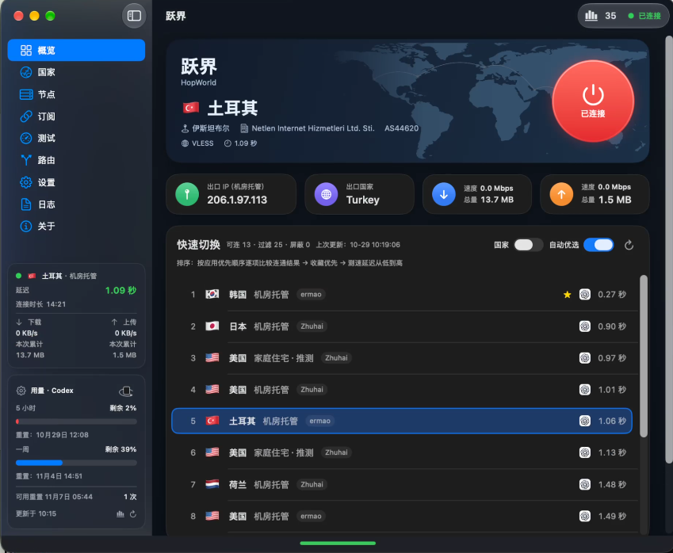

01
多协议节点
VLESS、VMess、Trojan、Shadowsocks、Hysteria2、MASQUE、TUIC、AnyTLS、WireGuard、SOCKS5、HTTP；支持订阅、分享链接与 Clash YAML 轻量解析。
起跳…
Capabilities
从订阅导入到按国家连接，从应用连通探测到 Codex 重置提醒，跃界把日常代理工作流收进一个原生窗口。
VLESS、VMess、Trojan、Shadowsocks、Hysteria2、MASQUE、TUIC、AnyTLS、WireGuard、SOCKS5、HTTP；支持订阅、分享链接与 Clash YAML 轻量解析。
节点延迟测速之外，还可探测 Google、ChatGPT、Claude、GitHub 等是否可达；测速后可自动补测可用节点。
规则代理、全局 TUN、仅指定应用 TUN；自定义强制代理 / 直连 / 拦截；按国家一键连接与自动故障切换。
网络健康中心观察节点与应用状态；Codex / Cursor 用量卡片，以及可选的 Codex 重置 iMessage 提醒。
应用内在线安装更新 Xray、sing-box、GeoFiles；加密节点库与选择性口令便携备份。
Product
首页、国家、订阅、路由与 Codex Token 统计——点击缩略图切换预览。

Protocols
十一种节点协议进入统一导入、测试与连接流程。
macOS 13.0 及以上。首次运行可在「关于 → 管理更新」安装 Xray；连接或测速时也会自动下载。安装包为 ad-hoc 签名，未做 Apple 公证。
若系统提示无法打开，可在「隐私与安全性」允许，或右键 App 选择打开。